Outdoor Walking
A User Interface design
Location-Based Walking Recommendations
“And into the forest I go, to lose my mind and find my soul”
― John Muir
An invisible aide to help one select and navigate walks anywhere in the world.
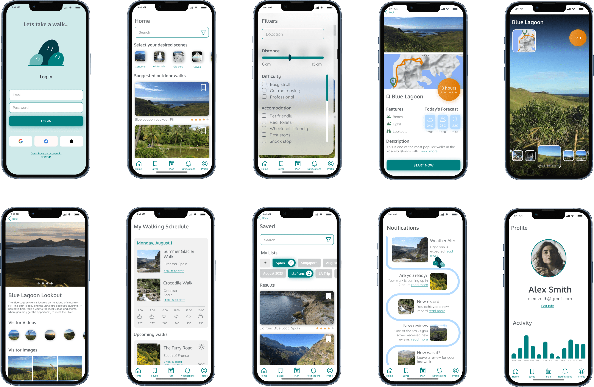Responsive Design
The urge to get outside can come at any time; while in the office, during flight, or in the middle of the night.
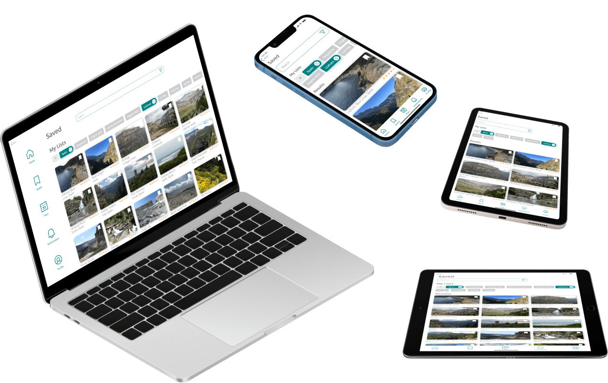Where do I want to walk?
Deciding on an outdoor adventure should be as fun and pleasant as the adventure itself.
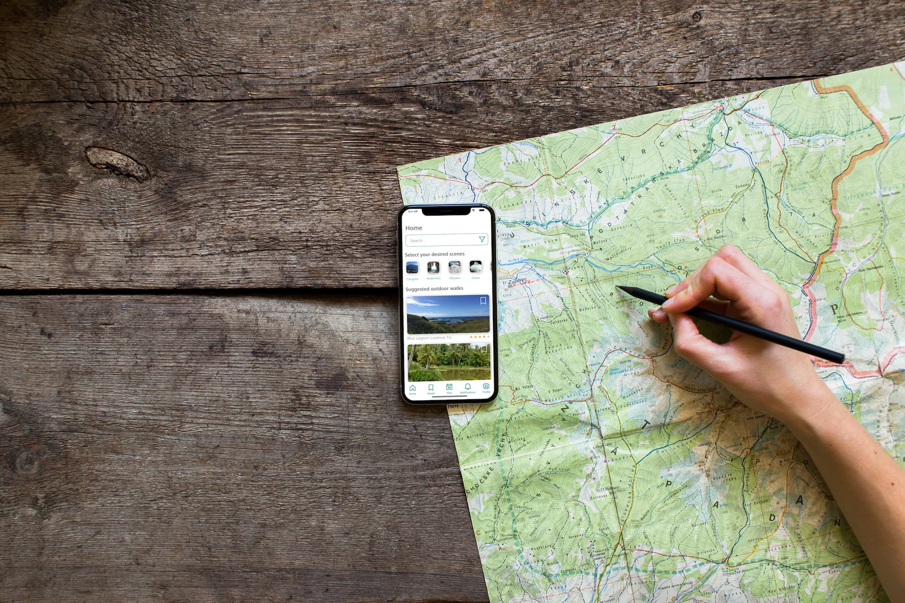No need to have several tabs open while deciding
All of the essential information in one glance.
- Detailed maps with the actual path
- Walk features (e.g. lakes, picnic spots, bird watching)
- Weather forecsts relevant to that walk
- Level of difficulty and estimated time
- Waypoint details
- Reviews from other visitors
And ability to save to favorites, share with others and schedule into your own calendar.
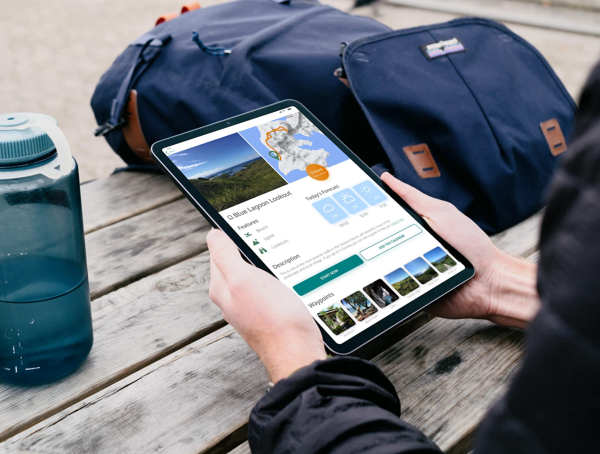Simple but Immersive
The research can feel like an adventure in itself.
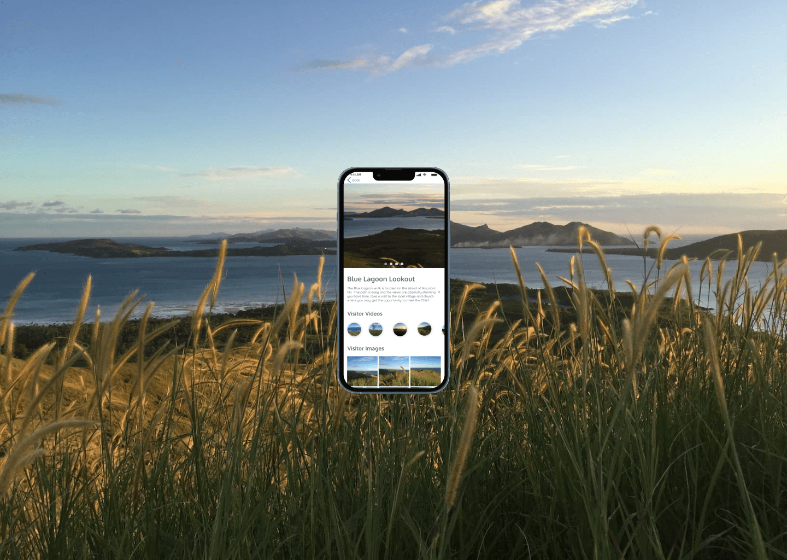Designed Asing a Lean UX Process
I learned from working with product teams that it is very important to make a plan, stick with it, and limit the scope of deliverables to artefacts that deliver insights or increment the design.
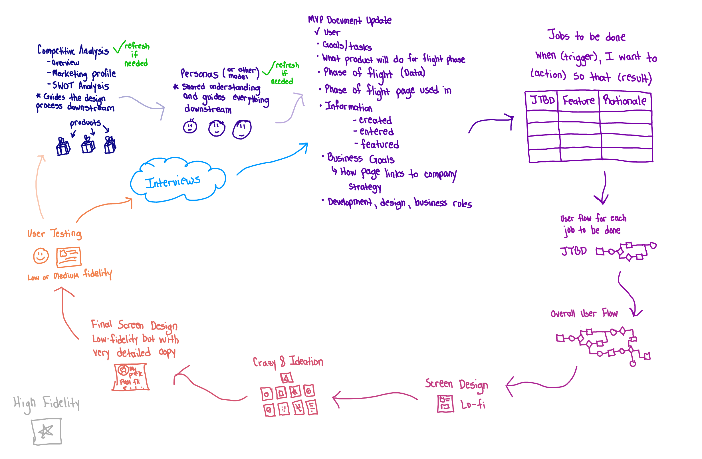Competitive Analysis
A competitive analysis of three different location-based recommendation apps sheds light on what opportunities exist to stand out in the market.

Personas
Who is this app perfect for?
HEART
Did the design come from a place of deep empathy?
Did the work inspire people to take action?
Did the process instill a deeper understanding of those we're
designing for?
--IDEO
I recruited and interviewed a few people around the globe to learn more aboutwhat real people were keen to accomplish, what is getting in their way, and what opportunities existed to add value to their experiences.
User interviews are the hardest part of the UX process because it requires finding people to have a dreaded, 'meeting' with you but once the scheduling and preperation is done, the actual interview itself can be pretty fun, even for the user.
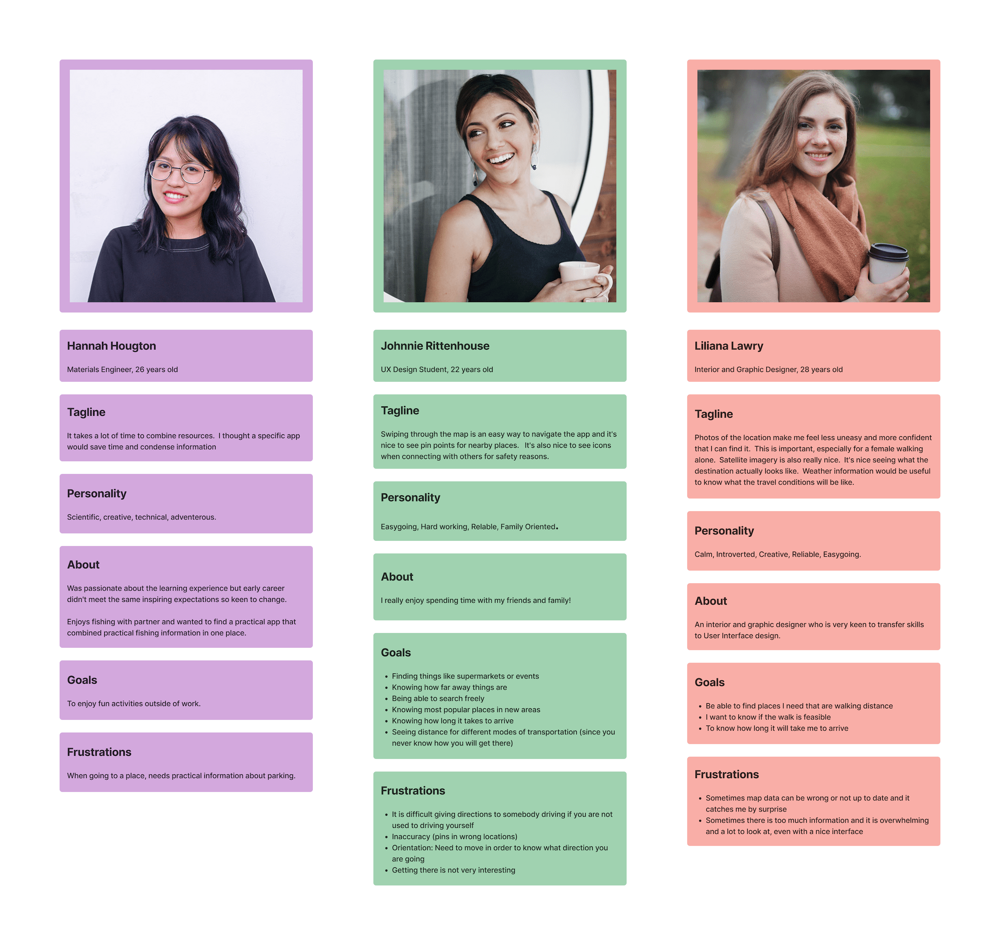MVP Definition
The biggest eye opener was learning that many people who needed location/based recommendations were not traveling by car and were keen to have a pleasant outdoor walking experience.
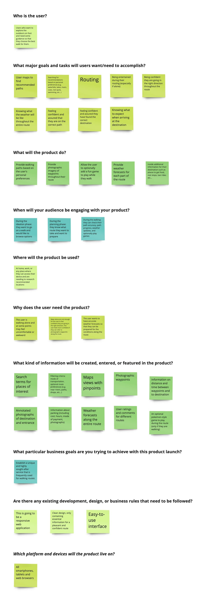Jobs To Be Done
Every functionality should deliver an output, that leads to an outcome that will benefit my personas.
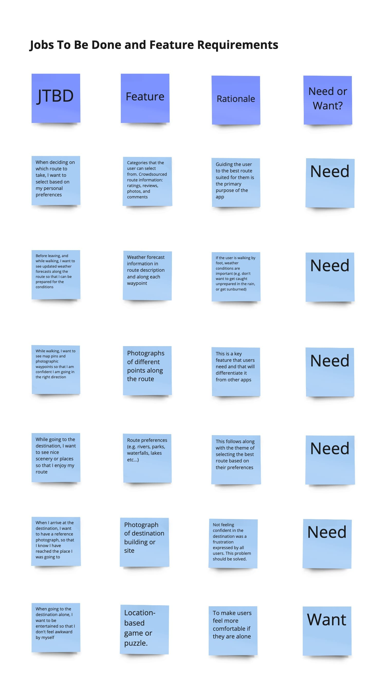User Flow for Each 'Job To Be Done'
To me, the user flow is the most fascinating part, where the rubber really hits the road.
BRAINS
Was the approach to discovery and design rigorous and
comprehensive?
Does the work feel smart, clever, or novel?
Is the design informed by a clear strategic intent?
--IDEO
A clean and simple articultion of all possiblities.

I like to iterate, iterate and iterate on the flow before drawing a single screen.
Ideation
Crazy 8's
An intense divergent ideation phase that I found, for me, is best done with either a few coffees or one of my favorite brain stimulating snacks, 'Candy Kittens' (warning, contains a lot of sugar).
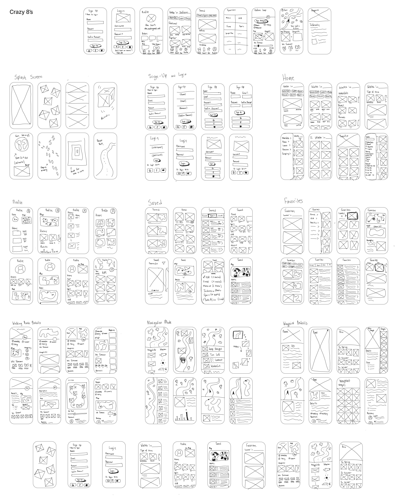Digital Paper Prototype
I converged to the first screen designs. I also crashed Figjam, which I discovered, is not made for GIANT drawing files. Adobe Illustrator for iPad wins on this one.
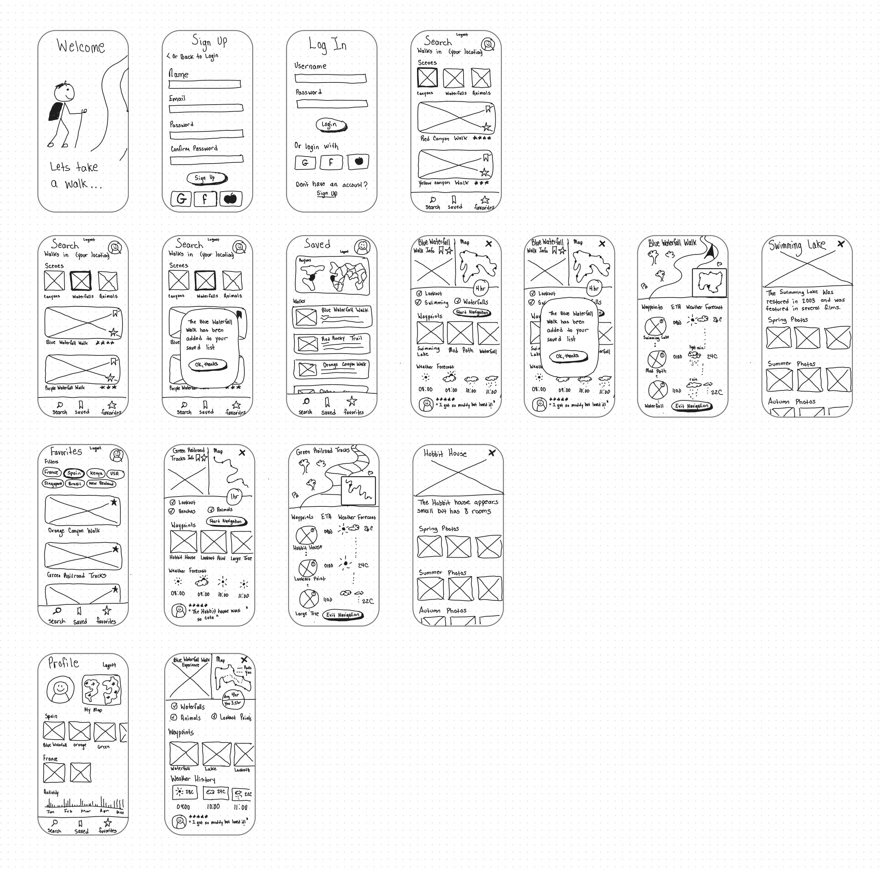Low Fidelity Prototype
In order to create a digital paper prototype, I copied the screen drawings from figjam into figma and linked the UI elements together using transparent rectangles.
I then performed usability tests in order to determine if users were able to use the app to
- Find suitable walks
- Gain information about these walks
- Navigate these walks
Testing
I wanted to know, overall, if users cloud flow smoothly through individual tasks that require searching, learning, decision making, navigating and analyzing data. The key questions were
- Can they find walks based on specific criteria?
- Can they save walks for later viewing, or add walks they like to their favorites list?
- Can they extract valuable insights about walks so they can better prepare?
- Can they use their walking history to recall details about their past walking experiences?
- Can they access the navigation feature correctly?
Retrospective
"Our brains strive to turn everything into a routine"
One thing I like about having a structured process is that it fosters a routine where you always know where you are, and what you can do next. I really think this is a great way to learn and progress without encountering burnout.
MASTERY
Does the work reflect the depth of our expertise, intuition and unique
capabilities?
Was there a transfer of knowledge, wisdom or skills?
Did the work help you learn or master a new tool, language, medium, or
material?
--IDEO
Grey Boxing
My boringly beautiful grey boxes. I am always a fan of giving unique names to my children: Rectangle 1, Rectangle 2, Rectangle 3...
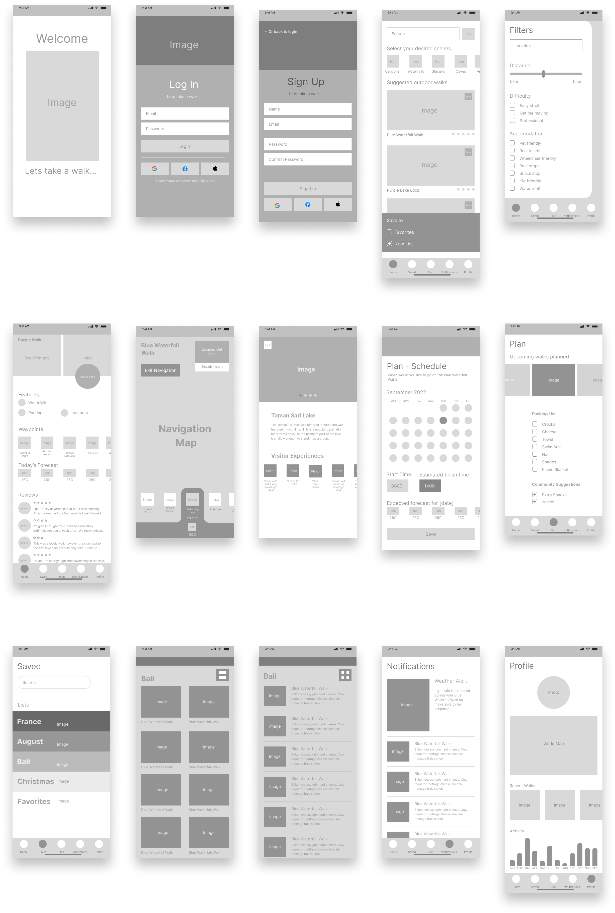Inspiration
I find that visual design requires inspiration, persistence, breaks and A LOT sleep. Unlike programming, there is no compiler to micromanage my language.BEAUTY
Is the work iconic? Desirable? Evocative?
Does the work feel elegant and simple in its solution?
Does the beauty of the work elevate the overall design and its
function?
--IDEO
Visual Direction #1
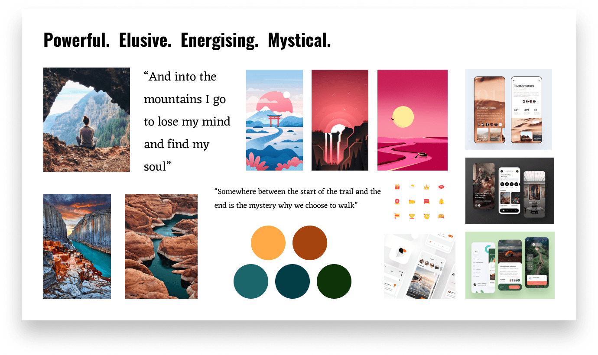Visual Direction #2
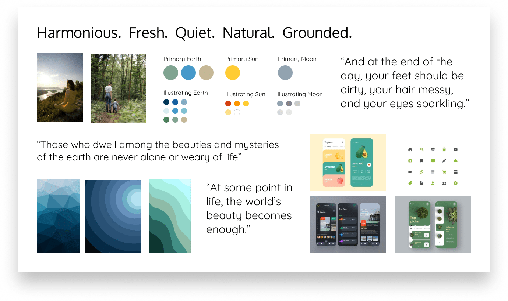Preference Test
Dribble is inspiring, but it is also good to do a sanity check on some design ideas. Perhaps also to have some empathy for the developers who will build it.
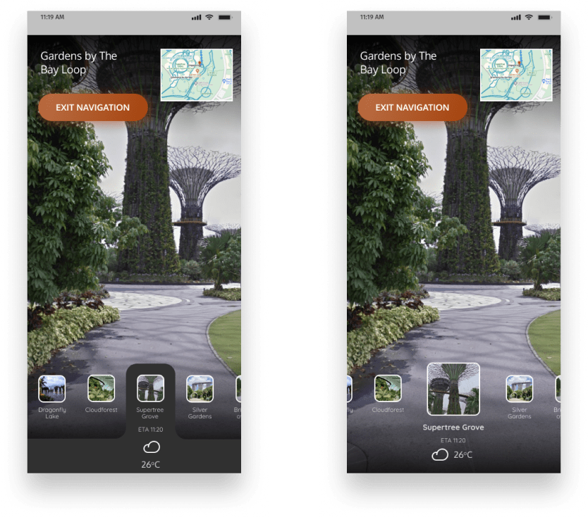Responsive Screens
Hand sketched
Designing responsive screens takes forever, and makes me sometimes wish we could keep the UI minimal and go from Apple pencil straight to code.
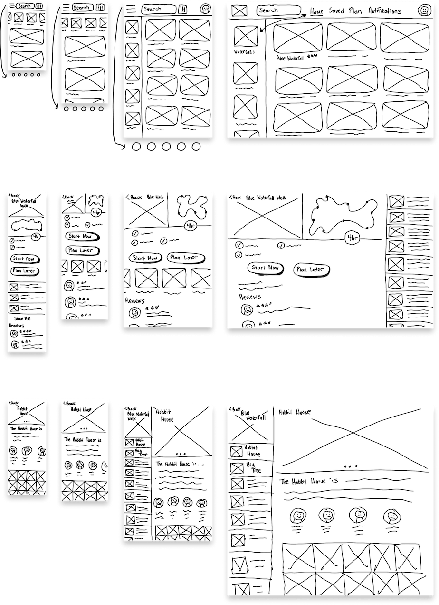Grey boxing with grids at breakpoints
Low-fidelity is where I keep all my inspiration (and mistakes).
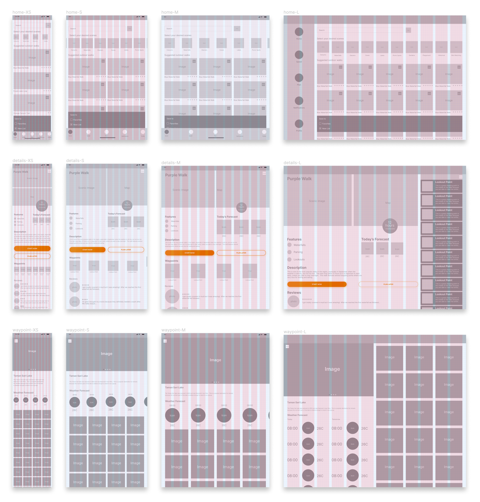